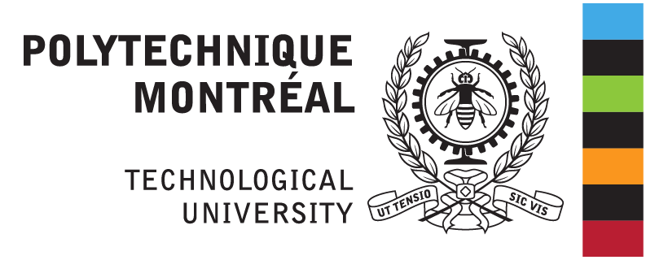

Your region has access to travel survey data? That information is valuable and imported on every map, in the background, quietly giving you tips about the impact of your decisions. Our analysis tools allow you to visualize the effects of a given decision. Those tools are flexible, fluid, and in the 4th dimensions, giving you insights about the variations happening on every hour of any given day!
Transition is built on top of the GTFS data format. Which means once your network is to your liking, publishing your data is one button away. Want to integrate regional data from other providers or your own data? Transition will import any GTFS dataset painlessly, and make that information readily avaiable to you!
The next evolution in transit planning
Creating from scratch or editing a legacy network piece by piece can be burdensome. Are your decisions improving your system efficiency, or are you quieting reinventing the wheel? We have a module for that, that will do most of the work for you (if you have travel survey data available). We've been developping genetic algorithms, which can create networks from scratch or optimize an existing one. We are leveraging the power of modern computing on the cloud to generate the fittest and most efficient networks.
+
The algorithms then tweak them, bring on challengers, form a new set of routes and trips, from which we again choose the fittest. And such goes the cycle, until we find the optimal solution for your needs balancing both your user benefits and limiting your costs. You control every important parameter : how many vehicles are available, how many hours of service can you offer to stay within your budgets? You set those values, and we take care of the rest, building the best network within those constraints!
And these algorithms can also be used to generate scenarios. You have new budgets and don't know where to allocate them for maximum efficiency? Or you are forced to make cutbacks and are trying to keep impacts to a minimum? Just enter the new values, set the parameters, and our algorithms will tell you how to get the best out of your new situation.
Open
Transition lives in the cloud, openly accessible from everywhere, or if you prefer, install your own servers. All you need is a modern browser, and you can do everything, from creating the most simple network to generating beautiful analytics map that will not only provide planning insights but also help people visualize you network and your operations!
+
Our software is mainly based on Ruby on Rails, one of the most renowned web framework, and PostgreSQL, the very best database system available. We leverage the power of open source data and tools, but also provide and share our own. From the road routing engine (Open Source Routing Machine) to the cartographic data (OpenStreetMap), we are litteraly standing on the shoulder of giants, and we give back by making some of the tools we develop in-house available to everyone as well (TrRouting).
Openness is at the core of our philosophy. We truly believe in collaborative development : tell us what you need, and if it makes sense, we'll find a way to make it available not only to you, but also to every single user of our software. And since the same goes for every single one of our user, you will eventually get features you never even thought you wanted!
Funding and partners

We acknowledge the support of the Natural Sciences and Engineering Council of Canada (NSERC).

- Société de transport de Montréal
- Réseau de transport de Longueuil
- Société de transport de Laval
- EXO
- Société de transport de l'Outaouais
- Société de transport de Sherbrooke


Copyright © 2020 Transition Platform